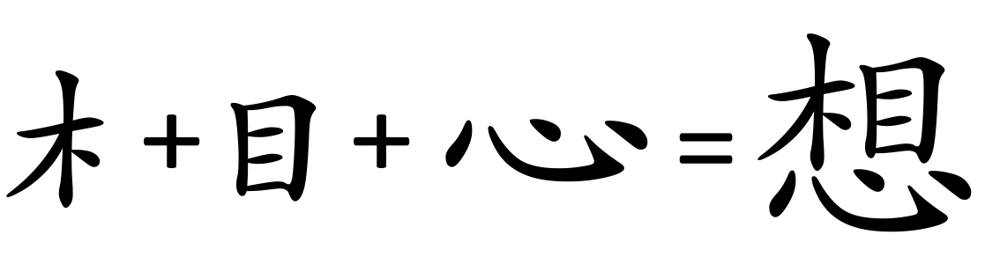
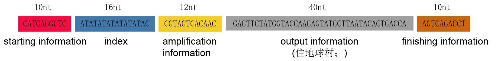
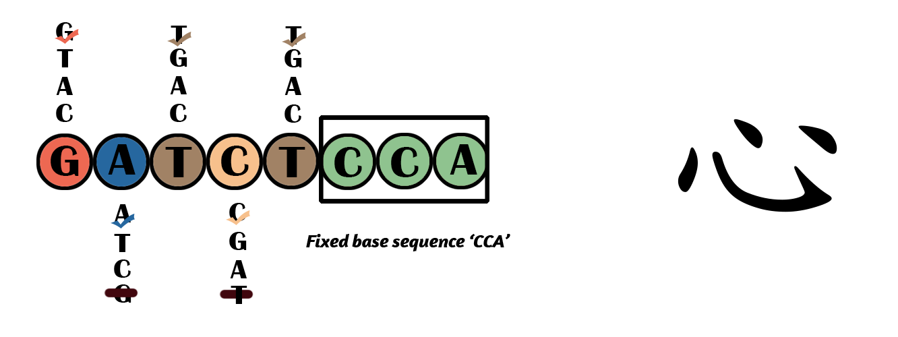
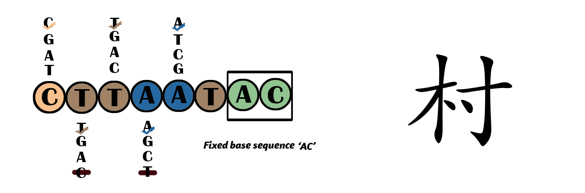
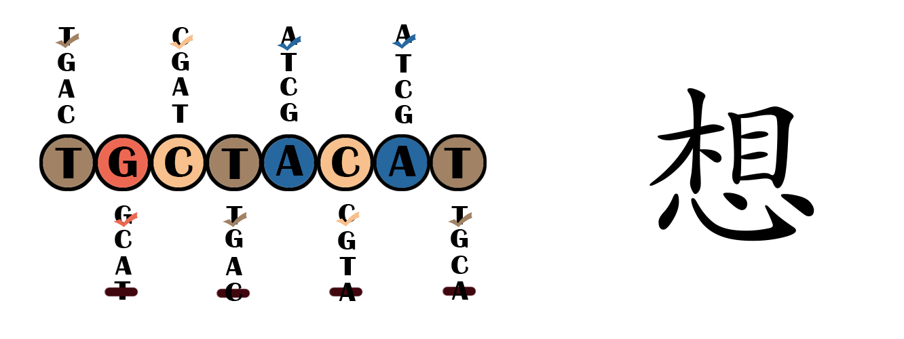
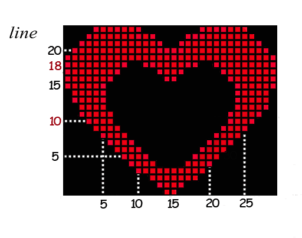
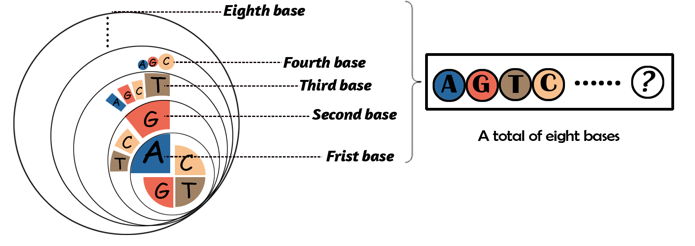

一段话-The number of Chinese characters is fairly enormous and the structure is complex (Chinese characters are planar two-dimensional patterns, however DNA sequences are linear arrangements of A, T, C, and G bases). Therefore, we divided Chinese characters into three categories according to the number of “representative etymons”.
一段话-First, you can think of the etymon as the building block, and the Chinese characters is a two-dimensional pattern made up of different building blocks. While the “representative etymon” is just a certain number of etymons that can be directly used to represent and distinguish different Chinese characters.
一段话-The way to choose the “representative etymon” is as followed:
一段话-(a) If a Chinese character contains only 1 or 2 etymons, the representative etymons are all etymons that make up it.
一段话- (i) Contain only one etymon: e.g. 心 (heart), 一 (one);
一段话- (ii) Contain two etymons: e.g. 你 (you)：亻 + 尔; 村 (village)：木 + 寸.
一段话-(b) If a Chinese character contains 3 or more etymons, we can divide the Chinese characters into many etymons according to the top-bottom order and left-right writing orders, and then discuss the “representative etymon” from two aspects:
一段话- (i) When the first two etymons are determined, and there is only one Chinese character corresponding to them, the two etymons are selected as its representative etymons: e.g. 啊 (Oh)：口 + 阝+ 可 (the first two are representative etymons) .
一段话- (ii) If Chinese characters cannot be determined by the first two character etymons, the first three character etymons and the last character etymon are selected as their representative etymons: e.g. 想 (think)：木 + 目 + 心 (all the three are representative etymons) .
Figure 1. One of the Chinese character in type I, “心” (heart).
Chinese characters with two representative etymons. There are 1039 Chinese characters in total.
Figure 2. One of the Chinese character in type II, “村” (village).
Chinese characters with three or more representative etymons and cannot be determined by the first two representative etymons.
We have counted a total of 6,763 Chinese characters, (the total of 6,763 Chinese characters in GB 2312-80), and currently we have counted 5,575 Chinese characters belonging to the Type III.

Figure 3. One of the Chinese character in type III , “想” (think).
We used 8 bases to represent one Chinese character. Considering it was possible to synthesize homopolymers1 and sequences with high GC content2, we designed "4*3" system principle to determine the choice of bases in each position and avoid homopolymers. If you want to learn more about “4*3” system principle, you can search more details at the end of this page.
As our final expectation is to store a whole Chinese book, we need to clarify the specific position of the Chinese characters to make them regular and successional. Therefore, we expand the strand with more nucleotides shown below:

Figure 4. The DNA sequence that we designed to store information, including starting information, index, amplification information, output information and finishing information.
In order to select the target information from the sequencing results and determine the effective segment, we designed starting information and finishing information. It can be used as an auxiliary splint.
There are three starting information, respectively representing the output information is (1) the plain text, (2) the text decorating with size, font and color, and (3) pictures.
10nt: The best auxiliary looping effect, which can distinguish the minimum number of base digits of information.
Index information is also part of the auxiliary loop-through primer, splint. It can also achieve the purpose of marking the number and locking the position of the information. For example, ATATATATATATATAC represents 00000001, which means the serial number of this group characters is 1.
16nt: It can fits the requirements of storage information positioning to the maximum extent, which theoretically can represent (12 ^ 8) x 5 = 2.1 x10 ^ 9, about 2.1 billion Chinese characters, and is enough to storage the book named "The Four Categories", known as owning the largest capacity of Chinese characters.
12nt: It’s the shortest sequence with the highest amplification efficiency.
40nt: Each character’s strand containing only 5 different Chinese Characters can control the length below 100nt in order to save on synthesis costs and reduce error rate.
| starting information | category | output information | analysis |
|---|---|---|---|
| CATGAGGCTC | the plain text |
|
|
| ACTACAACTA | the text decorating with size, font and color |
|
|
| ACATGACAGT | image |
|
Classify type I, II, and III characters into different groups.
Type I Chinese characters are not grouped because there are fewer words;
Type II Chinese characters are grouped according to the input rules corresponding to the Wubi input method according to the order of alphabet.
Type III is sorted according to the number of strokes in the same section as type II.
And the first 5 base pairs of the 5' end are used to encode each group.
Classify DNA sequence into different groups.
Since we use 8 bases to correspond one Chinese character. Dividing DNA sequences into different groups based on the 5 bases from the 5' end. If the first five bases of the DNA from 5’ end with the two strands are the same, they are divided into the same group, otherwise divided into different groups. The order of the sequence is based on the GC content.
Then the Chinese characters and the different groups of the sequence correspond with each other.
Corresponding DNA sequences:

Figure 5. One of the Chinese character in type I, “心” (heart) and its corresponding sequence. The checkmark represents the selected base, and the slash on the base indicates that the selected base cannot be repeated because the previous one has been selected. “CCA” means that all the last three positions of base sequences are fixed.
Corresponding DNA sequences:

Figure 6. One of the Chinese character in type II, “村” (village) and its corresponding sequence. The checkmark represents the selected base, and the slash on the base indicates that the selected base cannot be repeated because the previous one has been selected. “AC” means that all the last two positions of base sequences are fixed.
Corresponding DNA sequences:
Under the condition of satisfying the "4*3" system principle and lower GC content principle, the remaining sequences that the above two types of Chinese characters are removed.

Figure 7. One of the Chinese character in type III , “想” (think) and its corresponding sequence. All eight bases are not fixed.
Currently, it is only suitable for monochrome patterns, which means that the pattern in a picture can only have one color (red in the following picture), and the background of the pattern can be another single color different from the pattern (black in the following picture).
The encoding scheme of images also adopts the idea of "split" in the encoding schemes for Chinese characters, dividing the picture by "line", and the picture information of each line corresponds to a single DNA strand.

Figure 8. Image encoding. Take monochrome heart image for example. The image is processed into a pixel image, which is divided into lines and columns. The line number is used to correspond to the DNA. The numbers in the picture represent the line number and column number. Similarly, the dotted line indicates the line and column corresponding to the number in picture.
The specific steps that let images correspond to the DNA sequences are following:
Wow! It is very excited to get to this phase, and we are closer to our final goal!
You can learn more about "4*3" system principle from here:
It can be written like "4*3*4*3*....*4*3" in mathematics. Per two bases is a group from the beginning to the end in the DNA sequence, and the former in each group can be selected from any of A, T, C, and G, while the latter can only be selected from one of the remanent three bases different from the former. What’s more, the choice of bases in each group isn’t affected by the adjacent group and so on. As shown in Figure ?.

Figure 9. DNA sequences accord with “4*3” system principle. From inside to outside , the first circle represents the first base that you can choose from four kinds, and the second circle represents the second base which you can only choose from the remanent three kinds.
If you want to learn about the exploration process of our coding rules, please click here.
[1]Erlich Y, Zielinski D. DNA Fountain enables a robust and efficient storage architecture[J]. Science, 2017, 355(6328):págs. 950-954.
[2]Laver T, Harrison J, O’Neill P A, et al. Assessing the performance of the Oxford Nanopore Technologies MinION[J]. Biomol Detect Quantif, 2015, 3(C):1-8.